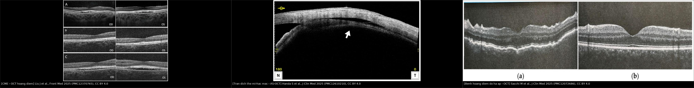
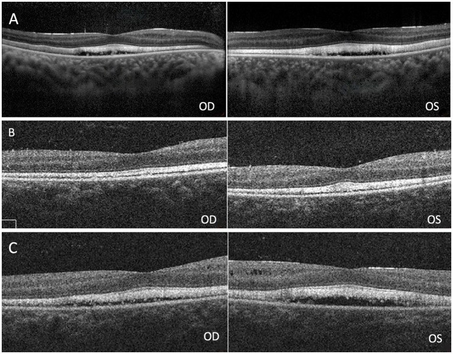
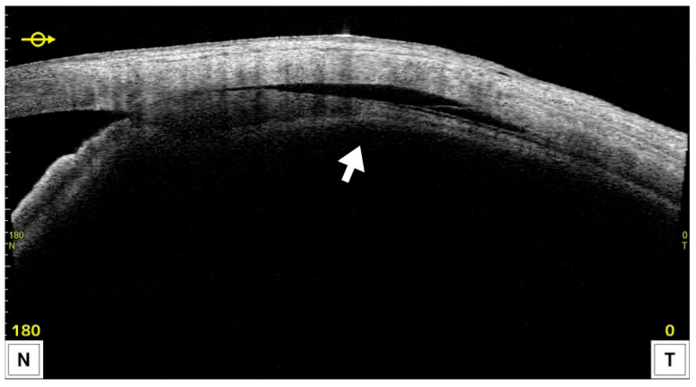
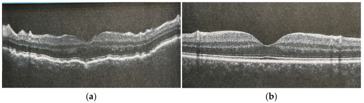

1446 — Phù hoàng điểm sau quang đông thể mi / Cystoid macular edema after cyclophotocoagulation
Tags: pattern:phu-hoang-diem pattern:day-vong-mac pattern:giam-thi-luc pattern:ha-nhan-ap pattern:bong-hac-mac pattern:sau-quang-dong pattern:vien-tien-phong vung:mat vung:hoang-diem vung:vong-mac vung:the-mi protocol:OCT protocol:AS-OCT protocol:gonioscopy protocol:B-scan score:CMT score:IOP
Mức chắc chắn (certainty): tổng hợp y văn (literature synthesis) — 1 đoàn hệ hồi cứu 31 mắt theo dõi OCT 1–30 tháng (2026), 1 đoàn hệ 28 mắt slow-coag 24 tháng (2024), 1 loạt 37 mắt micropulse (2025), 1 loạt 113 mắt slow-coag (2026), 1 ca nguyên văn có ảnh OCT trước–sau (2025), và 2 nghiên cứu điều trị CME sau đục thể thủy tinh dùng làm bằng chứng ngoại suy. Không có RCT nào so sánh “theo dõi” với “điều trị sớm” CME sau quang đông thể mi — phần điều trị là ngoại suy có ghi rõ.
Vì sao bài này quan trọng: bài 1431 dạy chọn chế độ quang đông thể mi (CW “pop” – slow-coag – micropulse) và đã nêu độ dày hoàng điểm tăng 165,5 µm với CW so với 55,8 µm với micropulse. Bài 1434 dạy mặt đối lập — hạ nhãn áp sau đốt. Nhưng câu hỏi thường gặp nhất ở phòng khám lại nằm giữa hai bài đó: bệnh nhân thấy mờ hơn sau đốt 3–6 tuần, nhãn áp đã tốt, đáy mắt không có bong võng mạc — đó là phù hoàng điểm, tràn dịch thể mi–hắc mạc, hay bệnh hoàng điểm do hạ áp? Ba bệnh cảnh cùng làm mờ mắt, cùng có “dày hoàng điểm”, nhưng một bên chỉ cần theo dõi, một bên cần corticoid/NSAID, một bên phải nâng nhãn áp. Gọi sai là tăng corticoid vô ích hoặc bỏ sót hạ áp đang làm hỏng hoàng điểm.
Sửa tiền đề của backlog (trung thực nguồn): backlog ghi “CMT tăng 165,5 vs 55,8 µm sau CW” như một con số của CME. Thực ra đó là độ dày hoàng điểm trung bình trong RCT, không phải tỉ lệ CME có nang. Bài này tách rõ hai khái niệm: dày hoàng điểm đơn thuần (rất thường gặp, thoáng qua) và CME xác nhận trên OCT (có khoang dạng nang) — vì chính sự lẫn lộn này làm tỉ lệ “CME sau đốt” dao động 2,6–25,8% trong y văn.
1. Tổng quan bệnh học – cơ chế hình ảnh – vì sao “đốt thể mi” lại làm phù hoàng điểm
- Bệnh học: quang đông thể mi xuyên củng mạc dùng diode 810 nm; năng lượng bị melanin ở biểu mô sắc tố thể mi hấp thụ → đông hoại biểu mô thể mi và mô đệm → giảm sản xuất thủy dịch. Nhưng nhiệt và mô hoại tử cũng giải phóng prostaglandin, cytokine và protein viêm vào tiền phòng và khoang trên hắc mạc. Chính viêm — không phải bản thân tia laser — là thứ phá vỡ hàng rào máu–võng mạc.
- TẠI SAO là phù dạng nang: viêm làm tăng tính thấm mao mạch quanh hoàng điểm và suy bơm của biểu mô sắc tố (RPE); dịch tích trong lớp nhân trong (INL) và lớp đám rối ngoài (OPL). Tế bào Müller hút dịch bằng kênh aquaporin-4 rồi phình lên (phù độc tế bào), sau đó dịch tràn ra ngoài tế bào thành khoang nang. Vì dịch trong quang học, nang giảm phản xạ (hyporeflective) trên OCT — khác với mảng xơ tăng phản xạ của màng trước võng mạc.
- TẠI SAO đỉnh ở tháng 1 rồi giảm: phản ứng viêm sau đốt đạt đỉnh 1–4 tuần rồi tự lui nếu không có yếu tố duy trì. Đoàn hệ 31 mắt slow-coag: CSFT 279 ± 25 µm trước đốt → 355 ± 153 µm ở tháng 1 → 293 ± 25 µm ở tháng 12 (p < 0,001); đến lần khám cuối vẫn 294 ± 25 µm, cao hơn nền (p < 0,001).
- TẠI SAO tỉ lệ dao động 2,6–25,8%: vì cách phát hiện khác nhau. Khi chỉ chẩn đoán trên đáy mắt/giảm thị lực, loạt 113 mắt slow-coag ghi CME 2,65% (3/113). Khi chụp OCT chủ động cho mọi mắt, đoàn hệ 31 mắt ghi 25,8% (8/31), phát hiện tháng 1–6, trung bình 2,1 ± 1,8 tháng; đoàn hệ 28 mắt ghi 21,4%, trong đó 10,7% còn dai dẳng ở lần khám cuối. Micropulse (VITRA 810) ghi 5,4% (2/37). → Con số đúng để tư vấn là “khoảng 1/5 nếu chụp OCT, khoảng 1/40 nếu chỉ khám lâm sàng”, không phải một con số duy nhất.
- Yếu tố nguy cơ (mức bằng chứng yếu, đơn biến): đái tháo đường (p = 0,031) và tiền sử phù hoàng điểm do đái tháo đường (p < 0,001); CSFT nền cao hơn ở nhóm phát triển CME (311 ± 21 vs 267 ± 15 µm, p < 0,001). Đây là liên quan thăm dò, không phải yếu tố nguy cơ độc lập — tác giả tự ghi rõ vì cỡ mẫu nhỏ.
- TẠI SAO thị lực có thể không giảm dù CME: trong đoàn hệ 31 mắt, CDVA 0,90 ± 0,90 → 1,02 ± 0,85 logMAR (p = 0,004) nhưng không khác giữa nhóm có và không có CME (p = 0,992). Nghĩa là mờ mắt sau đốt phần lớn do bệnh glôcôm/giảm thị lực nền, còn CME có thể không triệu chứng. Vì vậy không được suy CME từ triệu chứng — phải chụp OCT khi có chỉ định.
- TẠI SAO phân biệt với hạ áp quan trọng: hạ áp (IOP ≤ 5 mmHg) gây nếp võng mạc–hắc mạc và có thể kèm phù nội bào; điều trị là nâng nhãn áp, không phải tăng chống viêm. Ngược lại, tràn dịch thể mi–hắc mạc (ciliochoroidal effusion) gặp tới 59,4% (22/37) sau micropulse, hết trong 1 tháng ở 21/22 mắt có CE (1 ca teo nhãn) và không phải CME — nhưng trên lâm sàng cả hai đều làm “hoàng điểm dày”.
2. Mẫu hình + chẩn đoán phân biệt theo vị trí và thời điểm (Gamut)
- Theo thời điểm sau đốt:
- Ngày 1–7: dày hoàng điểm nhẹ, chưa có nang = phản ứng viêm cấp, không gọi là CME; kèm viêm tiền phòng (flare tăng), tràn dịch thể mi–hắc mạc sớm.
- Tuần 2 – tháng 6: CME thật (nang trong INL/OPL), đỉnh tháng 1; đây là cửa sổ để chụp OCT.
- Sau 6 tháng: CME dai dẳng (10,7% trong loạt 28 mắt) → nguy cơ mỏng võng mạc ngoài, mất dải ELM/EZ, thị lực khó hồi.
- Theo vị trí tổn thương trên OCT:
- Hoàng điểm trung tâm: nang trong INL/OPL, mất hõm hoàng điểm, có thể có dịch dưới võng mạc.
- Quanh hoàng điểm: dày lan tỏa không nang — thường gặp hơn, tự lui.
- Hắc mạc/thể mi (AS-OCT/UBM): khoang giảm phản xạ giữa thể mi và củng mạc = tràn dịch thể mi–hắc mạc, không phải CME.
- Đĩa thị: phù đĩa thị do hạ áp (kèm nếp võng mạc) — phân biệt với phù đĩa thị do glôcôm tiến triển.
- Gamut “mờ mắt sau quang đông thể mi”: CME sau đốt · tràn dịch thể mi–hắc mạc · bệnh hoàng điểm do hạ áp · viêm tiền phòng/viêm màng bồ đào dai dẳng · phù hoàng điểm do đái tháo đường (nếu có bệnh võng mạc nền) · CSCR do corticoid (nếu đã dùng corticoid) · màng trước võng mạc/co kéo dịch kính–võng mạc · bong võng mạc (phải loại trừ bằng B-scan/soi đáy mắt) · tiến triển glôcôm (thị trường, không phải hoàng điểm).
3. Bảng so sánh phân biệt (ma trận đối chiếu)
| Thực thể (entity) | Hình ảnh điển hình (OCT/AS-OCT/lâm sàng) | Chốt vào (rule-in) | Chốt loại (rule-out) | Gợi ý xác nhận |
|---|---|---|---|---|
| CME sau quang đông thể mi | Dày võng mạc trung tâm + khoang giảm phản xạ dạng nang ở INL/OPL; mất hõm hoàng điểm; không màng co kéo; xuất hiện 1–6 tháng sau đốt | Nang thật trên OCT + bối cảnh đốt thể mi + loại trừ hạ áp | Chỉ dày lan tỏa, không nang → chưa gọi CME; màng tăng phản xạ co kéo → không phải CME | OCT hoàng điểm có/không cản quang; so sánh với OCT nền; FA nếu cần (kiểu cánh hoa) |
| Tràn dịch thể mi–hắc mạc | AS-OCT/UBM: khoang giảm phản xạ giữa thể mi và củng mạc; tiền phòng nông; IOP có thể thấp; gặp 59,4% sau micropulse | Dịch trên hắc mạc/thể mi trên AS-OCT/UBM, hoàng điểm có thể bình thường | Không có dịch trên hắc mạc → loại trừ; nang hoàng điểm đơn thuần → CME | AS-OCT 360°, UBM 35–50 MHz; B-scan nếu không thấy |
| Bệnh hoàng điểm do hạ áp | Nếp võng mạc–hắc mạc (OCT: gấp khúc các lớp, đôi khi dịch dưới võng mạc), IOP ≤ 5 mmHg, tiền phòng nông, có thể phù đĩa thị | Nếp + IOP ≤ 5 mmHg, hồi phục khi nâng áp | IOP ≥ 6 mmHg và không nếp → ít khả năng | Đo IOP 2 lần, OCT hoàng điểm, AS-OCT/UBM tìm nguyên nhân hạ áp (bài 1434) |
| Viêm tiền phòng/viêm màng bồ đào dai dẳng | Tế bào/flare tiền phòng, dính mống mắt, có thể CME; đau, đỏ | Tế bào/flare + đáp ứng corticoid | Không viêm, không đau → loại trừ | Đèn khe, flare photometry; cấy nếu nghi nhiễm |
| Phù hoàng điểm do đái tháo đường | Dày hoàng điểm, nang, xuất tiết cứng, bệnh võng mạc nền; thường hai bên | Bệnh võng mạc ĐTĐ + xuất tiết cứng/vùng không tưới máu | Không có bệnh võng mạc nền → ít khả năng | OCT, FA/FFA; HbA1c |
| CSCR do corticoid | Bong thanh dịch võng mạc (không nang), hắc mạc dày; tiền sử corticoid | Bong thanh dịch + hắc mạc dày, không nang | Nang trong võng mạc → không điển hình CSCR | OCT EDI đo hắc mạc; ngừng corticoid nếu được |
| Màng trước võng mạc/co kéo | Màng tăng phản xạ trên bề mặt + co kéo, mất hõm; nang có thể có nhưng do traction | Màng tăng phản xạ + co kéo | Không màng, không co kéo → loại trừ | OCT cắt lớp mỏng; phân biệt tractional CME |

Ba ô, từ trái sang phải: (1) CME — nang giảm phản xạ trong võng mạc; (2) tràn dịch thể mi–hắc mạc — khoang giảm phản xạ giữa thể mi và củng mạc (mũi tên); (3) bệnh hoàng điểm do hạ áp — nếp võng mạc–hắc mạc. Ảnh: Liu J và cs., Front Med 2025 (PMC12370765), Handa S và cs., J Clin Med 2025 (PMC12610210), Sacchi M và cs., J Clin Med 2025 (PMC12072686) — đều CC BY 4.0, xem images/CREDITS.md.
4. Protocol theo dõi + thang điều trị
- Trước đốt: chụp OCT hoàng điểm (macula cube/volume) làm mốc, ghi CSFT và có/không nang; đo IOP, soi góc, đánh giá bệnh võng mạc đái tháo đường và tiền sử CME — đây là nhóm nguy cơ cao cần theo dõi dày hơn.
- Sau đốt: ngày 1 đo IOP + đèn khe (viêm, tiền phòng); tuần 1 đo IOP, đánh giá flare/đau; tháng 1 chụp OCT hoàng điểm ở mọi mắt có nguy cơ hoặc có triệu chứng; sau đó tháng 3, 6, 12 (đoàn hệ 2026 dùng đúng lịch 1–3–6–9–12 tháng).
- Ngưỡng hành động thực dụng:
- CSFT tăng ≥ 10% so với nền nhưng không nang (ngưỡng này lấy từ định nghĩa PCME, không phải ngưỡng riêng sau đốt) → theo dõi, kiểm soát viêm; chưa cần corticoid toàn thân.
- Có nang trên OCT → điều trị CME (dưới).
- IOP ≤ 5 mmHg + nếp võng mạc → chuyển sang bài 1434 (tìm khe/suy thể mi), không tăng corticoid mù.
- Dịch thể mi–hắc mạc đơn thuần, IOP ổn, thị lực ổn → theo dõi 4–8 tuần; phần lớn tự hết.
- Thang điều trị CME (ngoại suy từ CME sau đục thể thủy tinh; không có RCT sau đốt thể mi):
- NSAID tại chỗ (ví dụ nepafenac 1 mg/mL × 3 lần/ngày, 2 tháng): trong 536 mắt CME sau phaco, 18/19 mắt (94,7%) hết phù trong 2 tháng; đây là bằng chứng gián tiếp nhưng hợp lý vì cùng cơ chế viêm.
- Corticoid tại chỗ ± tiêm sau củng mạc (posterior sub-Tenon) triamcinolone: 43 mắt CME sau phaco cho thấy BCVA và CMT cải thiện ở mọi lần khám, IOP ổn định — dùng khi NSAID không đủ hoặc có viêm tiền phòng rõ. Ca CME sau micropulse có tiền sử viêm màng bồ đào đáp ứng nhanh với triamcinolone sau củng mạc.
- Corticoid nội nhãn (implant dexamethasone) hoặc anti-VEGF chỉ khi thất bại/thận trọng — không có dữ liệu riêng sau đốt thể mi, phải cá thể hóa và theo dõi IOP.
- Điều trị nguyên nhân duy trì: kiểm soát đường huyết, giảm viêm, tránh lặp đốt quá sớm khi hoàng điểm còn phù.
- Tiên lượng để tư vấn: phần lớn giảm dần trong 6–12 tháng; 10,7% dai dẳng; thị lực cuối không khác giữa có/không CME trong đoàn hệ 31 mắt — nhưng CME dai dẳng có thể để lại mỏng võng mạc ngoài, nên vẫn phải điều trị khi có nang.
flowchart TD
A[Mờ mắt sau quang đông thể mi] --> B[Đo IOP + đèn khe + OCT hoàng điểm]
B --> C{IOP ≤ 5 mmHg va co nep vong mac?}
C -->|Có| D[Hạ áp: tìm khe/suy thể mi — bài 1434]
C -->|Không| E{Co nang giam phan xa tren OCT?}
E -->|Không, chỉ dày lan tỏa| F[Theo dõi 4–8 tuần, kiểm soát viêm]
E -->|Có| G[CME: NSAID tại chỗ ± corticoid tại chỗ]
G --> H{Đỡ sau 4–8 tuần?}
H -->|Có| I[Tiếp tục đến hết 2–3 tháng, OCT lặp]
H -->|Không| J[Triamcinolone sau củng mạc / implant DEX]
J --> K{Thất bại hoặc tái phát?}
K -->|Có| L[Xem lại chẩn đoán: CSCR? ĐTĐ? co kéo? — cân nhắc anti-VEGF/implant]
K -->|Không| I
5. Biến thể bình thường và cạm bẫy
- “Dày hoàng điểm” không đồng nghĩa CME: sau đốt, CSFT có thể tăng mà không có nang (đặc biệt micropulse) — đây là phản ứng thoáng qua, không đưa vào tỉ lệ CME và không cần corticoid toàn thân.
- Tràn dịch thể mi–hắc mạc là bình thường ở mức độ nhẹ: gặp 59,4% sau micropulse, hết trong 1 tháng ở mọi mắt trừ 1 ca teo nhãn; chỉ can thiệp khi IOP thấp kéo dài, tiền phòng nông, hoặc thị lực giảm.
- Cạm bẫy “thỏa mãn tìm kiếm”: đã thấy CME thì dễ bỏ hạ áp hoặc tràn dịch thể mi–hắc mạc đi kèm; phải đo IOP và xem AS-OCT ở mọi ca CME sau đốt.
- Cạm bẫy “corticoid chữa mọi thứ”: ở mắt có CSCR do corticoid hoặc đáp ứng corticoid (tăng IOP), tăng liều làm bệnh nặng hơn. Hỏi kỹ tiền sử corticoid, đo IOP sau 1–2 tuần.
- Cạm bẫy “OCT segmentation”: máy có thể tự động vẽ đường ranh giới sai khi có nang lớn hoặc nếp → CSFT ảo; luôn xem lát cắt qua hõm hoàng điểm, không chỉ đọc con số.
- Biến thể giải phẫu: hõm hoàng điểm bẩm sinh/ngắn làm CSFT nền thấp giả tạo; cận thị cao làm hoàng điểm mỏng hơn — dùng so sánh với OCT nền của chính bệnh nhân, không dùng ngưỡng tuyệt đối của người khác.
- Không quên bệnh nền: ở người đái tháo đường, CME sau đốt có thể là phù hoàng điểm ĐTĐ tiến triển, không phải biến chứng laser — điều trị và tiên lượng khác.
6. Tự lượng giá — Blind Quiz
Ca 1 — Nam 52 tuổi, glôcôm góc đóng, đã đốt thể mi micropulse 6 tuần; nhãn áp 14 mmHg, mờ mắt nhẹ.

- Gợi ý lâm sàng: nhãn áp đã kiểm soát, không đau, tiền phòng sâu; không có tiền sử đái tháo đường.
- Câu hỏi: (1) Mô tả bất thường trên OCT? (2) Ba chẩn đoán phân biệt? (3) Dấu hiệu nào chốt CME và bước tiếp theo?
Bấm để hiện đáp án (findings + chẩn đoán)
- Dấu hiệu: hàng A (OD/OS) cho thấy dày võng mạc với khoang giảm phản xạ trong lớp nhân trong/đám rối ngoài, mất hõm hoàng điểm — phù hoàng điểm dạng nang. Hàng B: phù lui sau điều trị; hàng C: tái phát với dịch dưới võng mạc ở mắt trái.
- Chẩn đoán: CME sau quang đông thể mi (bệnh nhân trong bài gốc còn có bestrophinopathy + glôcôm góc đóng; CME tái phát sau phẫu thuật). Cơ chế: viêm sau đốt → phá hàng rào máu–võng mạc → nang trong INL/OPL.
- Bước tiếp: NSAID tại chỗ ± corticoid; nếu dai dẳng → triamcinolone sau củng mạc; theo dõi OCT tháng 3/6/12.
- Nguồn ảnh: Liu J, Xue Y, Huang W, Wang Y. Front Med 2025;12:1567964 (PMC12370765), Fig. 2 — CC BY 4.0; ca gốc có bệnh võng mạc bestrophin, không đại diện thuần cho CME sau đốt ở mắt bình thường.
Ca 2 — Nữ 68 tuổi, glôcôm tân mạch, micropulse 2 tuần; nhãn áp 9 mmHg, tiền phòng hơi nông, nhìn mờ.

- Gợi ý lâm sàng: không đau, không viêm tiền phòng; OCT hoàng điểm chưa thấy nang rõ.
- Câu hỏi: (1) Mũi tên chỉ gì? (2) Có phải CME không? (3) Xử trí?
Bấm để hiện đáp án (findings + chẩn đoán)
- Dấu hiệu: khoang giảm phản xạ giữa thể mi và củng mạc (mũi tên) = tràn dịch thể mi–hắc mạc (ciliochoroidal effusion), không phải nang trong võng mạc.
- Chẩn đoán: tràn dịch thể mi–hắc mạc sau micropulse — gặp 59,4% trong loạt 37 mắt, thường liên quan hạ áp nhẹ và tự hết.
- Xử trí: theo dõi 4–8 tuần, đo IOP; chỉ can thiệp nếu hạ áp kéo dài/tiền phòng nông/thị lực giảm. Không tăng corticoid chỉ vì “hoàng điểm dày”.
- Nguồn ảnh: Handa S, Kawaji T, Otsuka SI. J Clin Med 2025;14(21):7453 (PMC12610210), Fig. 4 — CC BY 4.0.
Ca 3 — Nam 61 tuổi, sau mổ glôcôm 2 tháng, nhãn áp 4 mmHg, nhìn mờ và biến dạng; OCT hoàng điểm dưới đây.

- Gợi ý lâm sàng: tiền phòng nông, không đau, không viêm; đã đốt thể mi trước đó.
- Câu hỏi: (1) Dấu hiệu chính? (2) Vì sao không gọi là CME? (3) Hướng xử trí?
Bấm để hiện đáp án (findings + chẩn đoán)
- Dấu hiệu: nếp gấp võng mạc–hắc mạc (các lớp gấp khúc, dày không đều) ở ảnh (a); (b) cho thấy hết nếp sau khi nâng nhãn áp.
- Chẩn đoán: bệnh hoàng điểm do hạ áp (hypotony maculopathy) — IOP ≤ 5 mmHg + nếp; không phải CME vì cơ chế là xẹp nhãn cầu gây biến dạng cơ học, không phải viêm/nang.
- Xử trí: nâng nhãn áp (điều chỉnh corticoid/van, đóng rò, điều trị khe thể mi nếu có — bài 1434), theo dõi OCT; nếp có thể hồi phục nếu sớm.
- Nguồn ảnh: Sacchi M và cs., J Clin Med 2025;14(9):3030 (PMC12072686), Fig. 2 — CC BY 4.0; ảnh gốc là hạ áp sau trabeculectomy được điều trị bằng tiêm máu tự thân, không phải sau đốt thể mi — dùng làm mẫu hình OCT, đã ghi rõ.
Bài liên quan chéo
- 1431 – Quang đông thể mi ở mắt bơm dầu: chọn CW/slow-coag/micropulse
- 1434 – Hạ nhãn áp sau quang đông thể mi & rách thể mi
- 1447 – Rách thể mi sau MIGS và Yamane
- 470 – CSCR do corticoid
- 1425 – Viêm nội nhãn sau tiêm nội nhãn
Ảnh
images/1446_phu-hoang-diem-sau-quang-dong-the-mi_OCT-CME_PMC12370765-Fig2.jpg— OCT CME trước/trong/sau điều trị, CC BY 4.0.images/1446_phu-hoang-diem-sau-quang-dong-the-mi_AS-OCT-CE_PMC12610210-Fig4.jpg— AS-OCT tràn dịch thể mi–hắc mạc sau micropulse, CC BY 4.0.images/1446_phu-hoang-diem-sau-quang-dong-the-mi_OCT-hypotony_PMC12072686-Fig2.jpg— OCT nếp võng mạc–hắc mạc do hạ áp, CC BY 4.0.images/composite_1446_CME-CE-hypotony.jpg— ảnh ghép 3 bệnh cảnh, tạo bằngtools/make_composite.py, không crop/kéo giãn, có dải attribution.
Không dùng để chẩn đoán độc lập khi chưa có người hướng dẫn.